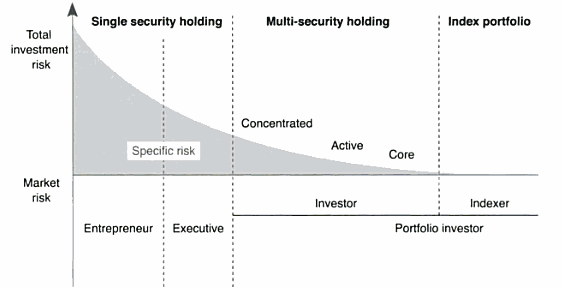

Introduction
Definition: Stock that has a much higher market value than its tax cost
- Basis - refers to the price used for the calculation of capital gains
Understanding Stock risk
- Market(systematic) risk vs. specific risk
- Three stages of equity holding life
- Entrepreneurial stage - no diversification; maximum investment in one, high-potential idea
- Executive stage - somewhat diversified; extent of diversification linked to the degree of control the individual has over the company's performance
- Investor stage - high diversification
The Four Stages of Specific Stock Risk

Reducing a Concentrated Exposure
- Outright sale
- Exchange funds
- Completion portfolios
- Single-asset class vs. multi-asset class completion portfolios
- Hedging strategies